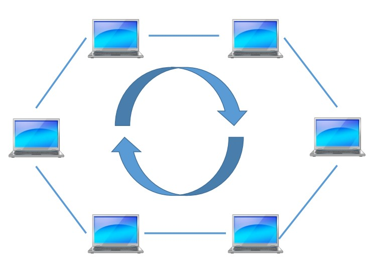
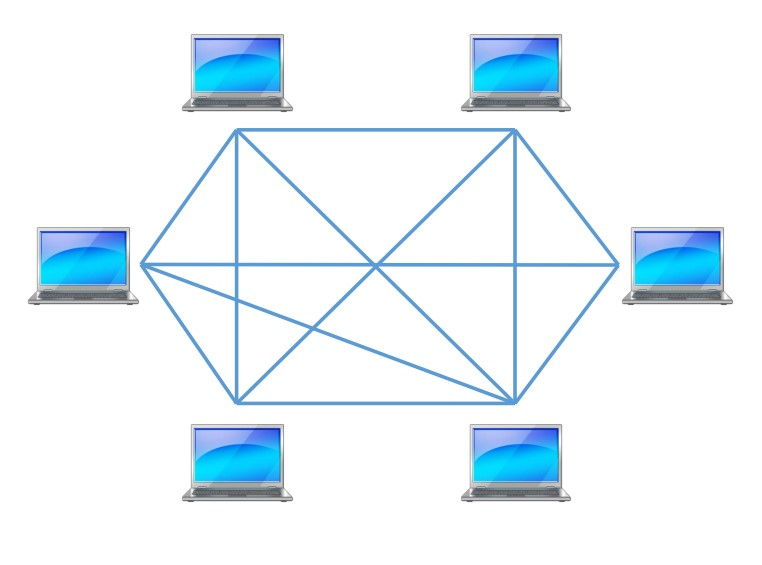

Сетевая карта
Можно сказать, что это интерфейс взаимодействия с сетью. Так как большинство устройств являются модульными (состоят из нескольких модулей, например компьютер или телефон), то сетевые карты подключаются к слотам на материнской плате. Для работы в сети каждый хост должен быть оснащён платой сетевого интерфейса (Network Interface Card — NIC), также называемой сетевым адаптером. Как правило, такие устройства могут функционировать и без компьютерной сети. Каждый адаптер NIC имеет уникальный код, называемый MAC-адресом.

WIFI-адаптер

Повторитель
Это особенно полезно для длинных линий связи, т.к. при передаче сигнал имеет свойство затухать. Когда сигналы покидают передающую станцию, они являются чёткими и легко распознаваемыми. Однако чем больше длина кабеля, тем более слабым и менее различимым становится сигнал по мере прохождения по сетевой передающей среде. Целью использования повторителя является регенерация и ресинхронизация сетевых сигналов на битовом уровне, что позволяет передавать их по среде на большее расстояние.

Концентратор
В результате получается сеть с логической структурой общей шины. Различают концентраторы активные и пассивные.
Активные концентраторы усиливают полученные сигналы и передают их.
Пассивные концентраторы пропускают через себя сигнал, не усиливая и не восстанавливая его.
Он просто принимает электронные сигналы одного порта и воспроизводит (или ретранслирует)
то же сообщение для всех остальных портов. Концентраторы и повторители имеют похожие характеристики,
поэтому концентраторы часто называют многопортовыми повторителями (multiport repeater).

Терминатор 


Сетевой мост
При получении из сети кадра (пакета) мост проверяет в его заголовке MAC-адрес и,
если он принадлежит данной подсети, передаёт (транслирует) кадр дальше в тот сегмент,
которому предназначался данный кадр. Если кадр не принадлежит данной подсети, мост ничего
не делает.
Мосты «изучают» характер расположения сегментов сети путём построения адресных таблиц вида
«Интерфейс:MAC-адрес», в которых содержатся адреса всех сетевых устройств и сегментов,
необходимых для получения доступа к данному устройству. Если порт пункта назначения в
данный момент занят, то мост может временно сохранить фрейм до освобождения порта.

Коммутатор
Для каждого нового соединения между узлами создается новый канал.
Такие отдельные каналы позволяют устанавливать несколько соединений одновременно без возникновения коллизий.
Коммутаторы используются так же для микросегментации (это архитектура,
при которой на каждый коммутатор приходится один сервер,
который непосредственно управляет всеми остальными подключёнными к коммутатору устройствами).
Следует также учесть, что существуют коммутаторы, которые способны решать часть задач третьего уровня модели OSI.
Такие коммутаторы ещё называют коммутаторами 2+ уровня.

Маршрутизатор
Если коммутаторы направляют сообщения конкретному устройству сразу на порт,
то маршрутизатор соединяет несколько подсетей.
Работу маршрутизатора можно отдалённо представить как работу почтальона.
В домашних условиях используют именно маршрутизатор. Коммутаторы же чаще всего ставят на предприятиях,
там где нужно подключить сразу большое количество сетевых устройств и компьютеров.
Также коммутатор не работает с интернетом – именно поэтому его нет смысла устанавливать дома.
Аналогично на предприятиях устанавливают и роутеры, которые помогают распределять трафик между несколькими сетями.
В крупных сетях маршрутизаторы являются главными устройствами, регулирующими перемещение по сети потоков данных.
В принципе маршрутизаторы позволяют обмениваться информацией любым типам компьютеров.
WIFI-роутер - это роутер, который имеет точку доступа WIFI. Помимо возможности проводного доступа,
он так же предоставляет доступ к беспроводной среде технологии WIFI.


Межсетевой экран
Большинство межсетевых экранов построено на классических моделях
разграничения доступа, согласно которым субъекту (пользователю, программе, процессу или сетевому пакету)
разрешается или запрещается доступ к какому-либо объекту (файлу или узлу сети) при предъявлении некоторого
уникального, присущего только этому субъекту, элемента. В большинстве случаев этим элементом является пароль.
В других случаях таким уникальным элементом является микропроцессорные карточки,
биометрические характеристики пользователя и т. п. Для сетевого пакета таким
элементом являются адреса или флаги, находящиеся в заголовке пакета, а также некоторые другие параметры.
Таким образом, межсетевой экран - это программный и/или аппаратный барьер между двумя сетями,
позволяющий устанавливать только авторизованные межсетевые соединения.
Обычно межсетевые экраны защищают соединяемую с Internet
корпоративную сеть от проникновения извне и исключает возможность доступа к конфиденциальной информации.

Шлюз
Сетевой шлюз конвертирует протоколы одного типа физической среды в протоколы другой физической среды (сети).
Например, при соединении локального компьютера с сетью Интернет обычно используется сетевой шлюз.
Маршрутизатор (он же — роутер) является одним из примеров аппаратных сетевых шлюзов.
Сетевые шлюзы могут быть аппаратным решением, программным
обеспечением или тем и другим вместе, но обычно это программное обеспечение, установленное на роутер или компьютер.

Топология "Шина"
В сети с топологией шина данные в виде электрических сигналов передаются всем компьютерам сети,
но принимает их только тот компьютер, адрес которого совпадает с адресом получателя.
Адрес получателя передается вместе с данными. В каждый момент времени передачу может вести
только один компьютер, поэтому производительность такой сети зависит от количества компьютеров в ней.
Чем больше компьютеров в сети, тем она медленнее.
Шина – это пассивная топология, т.е. компьютеры только слушают передаваемые по сети данные, но не
перемещают их от отправителя к получателю.
Поэтому выход одного или нескольких компьютеров из строя в такой сети никак не сказывается на работе сети.
Топология "Кольцо"
В отличие от пассивной технологии "шина", в сетях с топологией "кольцо" каждый компьютер выступает в роли повторителя (репитера), т.е. компьютеры не только слушают, но и передают данные в сети от отправителя к получателю. Здесь каждый компьютер усиливает данные и передает их следующему компьютеру, пока эти данные не окажутся в том компьютере, чей адрес совпадает с адресом получателя. Получив данные, принимающий компьютер посылает передающему сообщение, в котором подтверждает факт приема. Выход из строя хотя бы одного компьютера приводит к неработоспособности сети.
Топология "Звезда"
Сигналы от передающего компьютера поступают через концентратор ко всем другим компьютерам.
Концентраторы делятся на активные и пассивные.
Активные концентраторы передают сигналы так же, как репитеры (повторители), поэтому их называют
многопортовыми повторителями. Обычно они имеют от 8 до 12 портов для подключения компьютеров.
Активные концентраторы питаются от электрической сети.
К пассивным концентраторам относятся монтажные или коммутирующие панели, которые просто пропускают через себя
сигнал, не усиливая и не восстанавливая его.
Пассивным концентраторам не требуется питание от электрической сети.
Основное преимущество топологии "звезда" – высокая надежность.
Выход из строя одного или нескольких компьютеров не приводит к потере работоспособности остальной части сети.
Обрыв кабеля в одном месте приводит к отключению от сети только одного компьютера.
Только неисправность концентратора приводит к полной потере работоспособности сети.
Недостатком этой топологии является необходимость в дополнительном расходе кабеля и установке концентратора.
Ячеистая топология
Сеть с ячеистой топологией обладает высокой избыточностью и надежностью. Данные от одного компьютера к другому могут передаваться по разным маршрутам, поэтому разрыв кабеля не отражается на работоспособности сети. Главный недостаток сетей с ячеистой топологией – большой расход кабеля.
